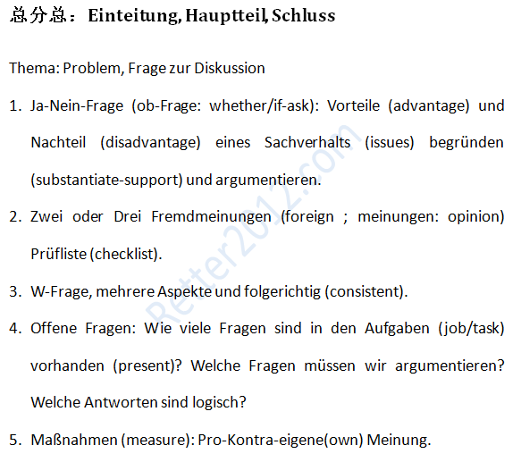

返回主页
德福写作：总分总

德福写作：文章结构
德福写作：写作提纲
德福写作：逻辑和形式
德福写作：议论辩论
德福写作：评分要求
德福作文：Das Fernstudium（要求）
德福作文：Medien und Internet（题目-1）
Retter is Better, WE Create and Deliver Real Value!
有这样一个流传已久的笑话：在一所国际学校里，老师给各国学生出了一道题：“有谁思考过世界上其他国家粮食紧缺的问题？”学生们都说“不知道”。非洲学生不知道什么叫“粮食”，欧洲学生知道什么叫“紧缺”，美国学生不知道什么叫“其他国家”，中国学生不知道什么叫“思考”。
从另一方面来说，中国学生读的是考试参考书，很少研读原著。调查和实验高考没有，从来不做。批评和批判，那更是禁忌！！
德语常用缩写
version:1.0; jobnet@188.com © retter2012.com